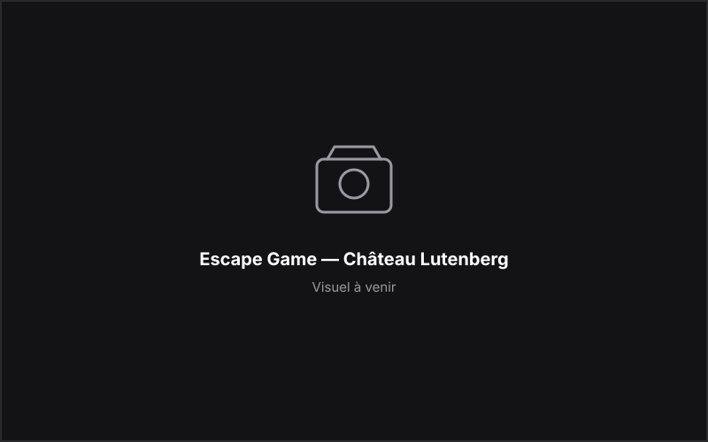

UX/UI & Graphic Design
Escape Game — Château Lutenberg
Projet créatif · UX/UI
Conception d'une expérience immersive mêlant UX/UI, identité visuelle et prototypage.
Présentation du projet
Conception d'une expérience immersive avec prototype Figma, moodboard, mockups et affiche. Présentation détaillée à compléter.
Objectif
Objectif à préciser.
Recherche / concept
Démarche de recherche et concept à venir.
Moodboard
Moodboard à venir.
UX/UI
Démarche UX/UI à venir.
Prototype Figma
Prototype Figma à venir.
Mockups
Mockups à venir.
Affiche
Affiche à venir.